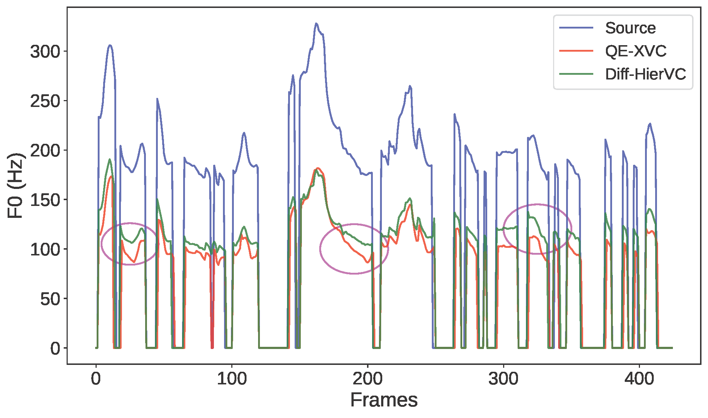

QE-XVC: Zero-shot Cross-lingual Voice Conversion via Query-Enhancement and Conditional Flow Matching
Han-Jie Guo1, Hui-Peng Du1, Shi-Ming Wang1, Xiao-Hang Jiang1, Ying-Ying Gao2, Shi-Lei Zhang2, Zhen-Hua Ling1*
1National Engineering Research Center of Speech and Language Information
Processing,
University of Science and Technology of China, Hefei, P.R.China
2Jiutian Artificial Intelligence Research Institute, China Mobile
Contact: ghj2001@mail.ustc.edu.cn
Architecture

Abstract
Voice conversion (VC) aims to modify the speaker identity of speech while preserving its linguistic content. Cross-lingual voice conversion (XVC) further enables converting speech between speakers of different languages. Existing zero-shot XVC methods often struggle with pronunciation errors, insufficient speaker modeling or the difficulty of aligning source and target across languages. In this paper, we propose QE-XVC, an efficient zero-shot XVC method with query-enhancement and conditional flow matching (CFM). Specifically, we designed a query-enhancement module in which the speaker embeddings from an speaker verification (SV) model and the content representation are successively used as queries to enhance the frame-level speaker representations extracted by wavelet convolutions. The CFM model then generates converted acoustic features conditioned on both the content and the fine-grained speaker representations, which are subsequently transformed into waveforms by a vocoder. Experimental results demonstrate that, QE-XVC reduces potential pronunciation errors without introducing any quantization or clustering operations, while also improving prosody preservation from the source speaker.
Prosody Comparison
| Source | Target | QE-XVC | Diff-HierVC | RefXVC | vec2wav 2.0 |
|---|---|---|---|---|---|
| Source | Target | QE-XVC | Diff-HierVC | RefXVC | vec2wav 2.0 |
|---|---|---|---|---|---|